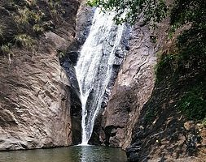

Kottayam is a city in the Indian state of Kerala.It is located in central Kerala and is also the administrative capital of Kottayam district.Bordered by the lofty and mighty Western Ghats on the east and the Vembanad Lake and paddy fields of Kuttanad on the west, Kottayam is a land of unique characteristics.Panoramic backwater stretches, lush paddy fields, highlands, hills and hillocks, extensive rubber plantations, places associated with many legends and a totally literate people have given Kottayam District the enviable title:The land of letters, legends, latex and lakes.
Tourist attraction in Kottayam!
Illikkal Kallu
Illikkal Kallu is a monolith located on top of the Illickal Malaa in the Kottayam district of Kerala, India.The distance from kottayam railway station to illikal kallu is 57km. Situated at around 3400 feet above sea level, Illickal Kallu is a major tourist attraction in Moonnilavu and Thalanadu village of Meenachil taluk. Only one half of the original rock remains, as the other half of the rock has fallen off. The nearest town is Teekoy. Numerous mountain streams originate from this peak and flow down to form the Meenachil River. Tourists must trek 1 km to reach the summit of the peak
Ilaveezhapoonchira
Ilaveezhapoonchira is a tourist destination located in Melukavu village in Kottayam district near Kanjar. Ilaveezha Poonchira is surrounded by three enchanting hillocks - Mankunnu, Kodayathoormala and Thonippara. This makes the place ideal for trekking.
Kattikkayam Waterfalls

. Kattikkayam Waterfalls is a beautiful waterfall situated between two mountains in Mechal near Melukavu in Kottayam district, Kerala.Kattikkayam Falls is situated in Mechal, a diversion of Erattupetta – Thodupuzha road near Melukavu.
Kumarakom Bird Sanctuary
Kumarakom Bird Sanctuary is situated at Kumarakom in Kottayam taluk of Kottayam district in the Indian state of Kerala, on the banks of Vembanad Lake. Set in the Kerala Backwaters, the bird sanctuary is visited by many migratory bird species
The Thazhathangadi Juma Masjid
The Thazhathangadi Juma Masjid is one of the oldest mosques in India (about 1,000 years old). It is believed that Habib Dinar (son of Malik Dinar who introduced Kerala to Islam) constructed the masjid. It is built in the traditional Kerala style of architecture. It is famous for its richness of architecture, wood caring and the beauty. This mosque is situated on the bank of Meenachil river.